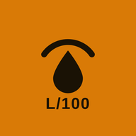

bnzn privacy policy
Last updated 17 October 2026 · bnzn support
In short
bnzn has no account, no ads, no analytics and no tracking of its own. Your fill-ups, vehicles, reminders and settings are saved on your phone, and in your phone's own backup if you have it turned on. The developer of bnzn runs no server and only receives something from you if you choose to send it, for example with Report a problem.
Who is responsible
bnzn is published by the developer named on bnzn's Google Play and App Store pages. To contact them, write to the email address on bnzn's store listing.
What the app stores, and where
Everything you enter (odometer readings, liters or kWh, prices, stations, vehicles, earnings, reminders and settings) is kept in the app's private storage on your device, together with the app's last 50 error messages and, on Android, a short summary for the home-screen widget. bnzn does not send it anywhere. Uninstalling the app or clearing its data deletes it from the phone, but not from phone backups or backup files you saved (see below).
Phone backups
Android: if Backup is turned on in your phone's settings, Android's automatic backup copies bnzn's data file to your Google account, and the same file can be copied when you move to a new phone with Android's transfer tool. Only that file is included. You can see and delete these backups in your Google account (for example under Backups in the Google One or Google Drive app), or turn backup off in your phone's settings.
iPhone: bnzn's data is included in your iCloud backup if iCloud Backup is on, and in backups you make to a computer. You manage and delete them in your iPhone's iCloud settings or on that computer.
These backups are stored by Google or Apple under their own privacy policies. The developer of bnzn cannot see them.
Backup files and exports
When you tap Save backup file, Export to spreadsheet or the history report, the app creates a file on your phone and opens your phone's share sheet. You choose where it goes (for example Google Drive, Files, WhatsApp or email). Once shared, that copy is handled by the service you picked, under its own privacy policy. Restoring a backup reads the file you select and nothing else.
Notifications
Oil change, insurance, inspection and vignette reminders, and the optional Pump price days notification (10:00 on the 1st and 16th of each month, off until you turn it on), are scheduled on your phone as local notifications. No server is involved. You can turn them off in the app or in your phone's settings at any time.
Pump and receipt scan
When you scan, you take or choose a photo and the numbers are read on your phone. The photo is not uploaded and the app does not keep it.
iPhone: the text is read by Apple's Vision framework on the phone. Nothing is sent.
Android: the text is read by Google ML Kit text recognition, provided by Google Play services on the phone. Google Play services may download the text recognition model from Google. When the feature runs, ML Kit sends Google technical information for diagnostics and usage analytics: device information (manufacturer, model, Android version and build, available machine-learning hardware), the app's package name and version, a device identifier, performance figures such as how long recognition took, the settings used (such as image format and size), the size of the input and output, the feature version, event types and error codes. Your photo and the text read from it are not in that list. Google states that this data is encrypted in transit and not transferred to third parties. See Google's ML Kit data disclosure and the Google Privacy Policy. Phones without Google Play services don't show Scan.
Report a problem
Settings › Report a problem prepares a report with the app version, your phone model, your Android or iOS version, the app's language and home currency, how many fill-ups and vehicles you have, whether its saved data could be read, and the app's last error messages. It contains none of your fill-ups. You read it, can change it, and send it yourself with your phone's share sheet or your email app. Nothing is sent automatically. If you send it, the developer receives that message and whatever the app you send it with adds, such as your email address, and uses them only to look into the problem and reply to you.
Rating prompt
After your third full-tank result, and then at most once every 120 days, bnzn asks Google Play or the App Store to show their rating window. They decide whether it appears. Any rating or review you give goes to Google or Apple under their terms, and the app is not told whether you rated or what you wrote. Reviews are shown publicly on the store, where the developer can read and answer them like any other review (during closed testing on Google Play, they are shared privately with the developer instead).
Permissions
- Notifications, to show your reminders.
- Run at startup (Android), so reminders still arrive after the phone restarts.
- Camera (iPhone), only when you choose to take a photo to scan.
- Internet (Android), used only by Google Play services and ML Kit as described above. bnzn itself sends nothing.
Children
bnzn is a tool for drivers and is not directed to children under 13. It collects no personal information from anyone.
Changes and contact
If this policy changes, the new version is published on this page with a new date. Questions: write to the email address on bnzn's store listing, or open an issue on the bnzn project page.
En bref
bnzn n'a ni compte, ni publicité, ni statistiques d'usage, ni pistage qui lui soit propre. Vos pleins, véhicules, rappels et réglages sont enregistrés sur votre téléphone, et dans la sauvegarde du téléphone si elle est activée. Le développeur de bnzn n'a aucun serveur et ne reçoit quelque chose de vous que si vous choisissez de l'envoyer, par exemple avec Signaler un problème.
Responsable
bnzn est publié par le développeur indiqué sur les pages de bnzn dans Google Play et l'App Store. Pour le contacter, écrivez à l'adresse e-mail indiquée sur la fiche de bnzn dans le store.
Ce que l'application enregistre, et où
Tout ce que vous saisissez (kilométrage, litres ou kWh, prix, stations, véhicules, recettes, rappels et réglages) reste dans le stockage privé de l'application sur votre appareil, avec les 50 derniers messages d'erreur de l'application et, sur Android, un court résumé pour le widget d'écran d'accueil. bnzn ne l'envoie nulle part. Désinstaller l'application ou effacer ses données les supprime du téléphone, mais pas des sauvegardes du téléphone ni des fichiers de sauvegarde que vous avez enregistrés (voir plus bas).
Sauvegardes du téléphone
Android : si la sauvegarde est activée dans les réglages du téléphone, la sauvegarde automatique d'Android copie le fichier de données de bnzn dans votre compte Google, et ce même fichier peut être copié quand vous passez à un nouveau téléphone avec l'outil de transfert d'Android. Seul ce fichier est inclus. Vous pouvez voir et supprimer ces sauvegardes dans votre compte Google (par exemple dans Sauvegardes de l'application Google One ou Google Drive), ou désactiver la sauvegarde dans les réglages du téléphone.
iPhone : les données de bnzn font partie de votre sauvegarde iCloud si elle est activée, et des sauvegardes faites sur un ordinateur. Vous les gérez et les supprimez dans les réglages iCloud de l'iPhone ou sur cet ordinateur.
Ces sauvegardes sont conservées par Google ou Apple selon leurs propres politiques de confidentialité. Le développeur de bnzn ne peut pas les voir.
Fichiers de sauvegarde et exports
Quand vous touchez Enregistrer une sauvegarde, Exporter en tableur ou le rapport d'historique, l'application crée un fichier sur votre téléphone et ouvre le menu de partage. Vous choisissez sa destination (par exemple Google Drive, Fichiers, WhatsApp ou e-mail). Une fois partagée, cette copie relève du service choisi et de sa propre politique de confidentialité. La restauration lit uniquement le fichier que vous sélectionnez.
Notifications
Les rappels de vidange, d'assurance, de visite technique et de vignette, ainsi que la notification facultative Jours de changement des prix (10 h le 1er et le 16 de chaque mois, désactivée tant que vous ne l'activez pas), sont programmés sur votre téléphone sous forme de notifications locales. Aucun serveur n'intervient. Vous pouvez les désactiver à tout moment dans l'application ou dans les réglages du téléphone.
Scan de la pompe ou du ticket
Quand vous scannez, vous prenez ou choisissez une photo et les chiffres sont lus sur votre téléphone. La photo n'est pas envoyée et l'application ne la conserve pas.
iPhone : le texte est lu par le framework Vision d'Apple, sur le téléphone. Rien n'est envoyé.
Android : le texte est lu par la reconnaissance de texte Google ML Kit, fournie par les services Google Play sur le téléphone. Les services Google Play peuvent télécharger le modèle de reconnaissance de texte depuis Google. Quand la fonction s'exécute, ML Kit transmet à Google des informations techniques à des fins de diagnostic et de statistiques d'utilisation : informations sur l'appareil (fabricant, modèle, version et build d'Android, matériel d'apprentissage automatique disponible), nom et version de l'application, un identifiant de l'appareil, des mesures de performance comme la durée de la reconnaissance, les paramètres utilisés (comme le format et la taille de l'image), la taille des données en entrée et en sortie, la version de la fonction, des types d'événements et des codes d'erreur. Votre photo et le texte lu n'en font pas partie. Google indique que ces données sont chiffrées pendant leur transfert et ne sont pas transmises à des tiers. Voir la déclaration de Google sur les données ML Kit et les règles de confidentialité de Google. Le scan n'apparaît pas sur les téléphones sans services Google Play.
Signaler un problème
Réglages › Signaler un problème prépare un rapport avec la version de l'application, le modèle du téléphone, la version d'Android ou d'iOS, la langue et la monnaie de l'application, le nombre de pleins et de véhicules, si ses données enregistrées ont pu être lues, et les derniers messages d'erreur de l'application. Il ne contient aucun de vos pleins. Vous le lisez, pouvez le modifier, et l'envoyez vous-même avec le menu de partage du téléphone ou votre application d'e-mail. Rien n'est envoyé automatiquement. Si vous l'envoyez, le développeur reçoit ce message et ce que l'application d'envoi y ajoute, comme votre adresse e-mail, et ne s'en sert que pour étudier le problème et vous répondre.
Demande de note
Après votre troisième résultat de plein complet, puis au plus une fois tous les 120 jours, bnzn demande à Google Play ou à l'App Store d'afficher leur fenêtre de notation. Ce sont eux qui décident si elle apparaît. Une note ou un avis que vous laissez va à Google ou à Apple selon leurs conditions, et l'application ne sait ni si vous avez noté ni ce que vous avez écrit. Les avis sont publics sur le store, où le développeur peut les lire et y répondre comme tout autre avis (pendant un test fermé sur Google Play, ils sont partagés seulement avec le développeur).
Autorisations
- Notifications, pour afficher vos rappels.
- Démarrage (Android), pour que les rappels arrivent même après un redémarrage.
- Appareil photo (iPhone), seulement quand vous choisissez de prendre une photo à scanner.
- Internet (Android), utilisé seulement par les services Google Play et ML Kit comme décrit ci-dessus. bnzn n'envoie rien.
Enfants
bnzn est un outil pour conducteurs et ne s'adresse pas aux enfants de moins de 13 ans. Il ne collecte aucune information personnelle.
Modifications et contact
Si cette politique change, la nouvelle version est publiée sur cette page avec une nouvelle date. Pour toute question : écrivez à l'adresse e-mail indiquée sur la fiche de bnzn dans le store, ou ouvrez un ticket sur la page du projet bnzn.
باختصار
لا يحتوي bnzn على حساب ولا إعلانات ولا إحصاءات استخدام ولا تتبّع خاص به. تُحفظ تعبئاتك ومركباتك وتذكيراتك وإعداداتك على هاتفك، وفي النسخة الاحتياطية للهاتف إن كانت مفعّلة. لا يملك مطوّر bnzn أي خادم، ولا يتلقى منك شيئًا إلا إذا اخترت إرساله، مثلًا عبر الإبلاغ عن مشكلة.
المسؤول
يَنشر bnzn المطوّرُ المذكور في صفحتي bnzn على Google Play وApp Store. للتواصل معه، راسله على عنوان البريد الإلكتروني المذكور في صفحة bnzn على المتجر.
ما الذي يحفظه التطبيق وأين
كل ما تُدخله (قراءات العدّاد، اللترات أو kWh، الأسعار، المحطات، المركبات، المداخيل، التذكيرات والإعدادات) يبقى في التخزين الخاص بالتطبيق على جهازك، مع آخر 50 رسالة خطأ للتطبيق، وعلى أندرويد ملخص قصير لأداة الشاشة الرئيسية. لا يرسله bnzn إلى أي مكان. حذف التطبيق أو مسح بياناته يحذفها من الهاتف، لكن ليس من النسخ الاحتياطية للهاتف ولا من ملفات النسخ الاحتياطية التي حفظتها (انظر أدناه).
النسخ الاحتياطية للهاتف
أندرويد: إذا كان النسخ الاحتياطي مفعّلًا في إعدادات الهاتف، ينسخ النسخ الاحتياطي التلقائي لأندرويد ملف بيانات bnzn إلى حسابك على Google، ويمكن نسخ الملف نفسه عند الانتقال إلى هاتف جديد بأداة النقل في أندرويد. لا يُضمَّن إلا هذا الملف. يمكنك رؤية هذه النسخ وحذفها من حسابك على Google (مثلًا في قسم النسخ الاحتياطية في تطبيق Google One أو Google Drive)، أو إيقاف النسخ الاحتياطي من إعدادات الهاتف.
الآيفون: تدخل بيانات bnzn في نسختك الاحتياطية على iCloud إن كانت مفعّلة، وفي النسخ الاحتياطية التي تحفظها على كمبيوتر. تديرها وتحذفها من إعدادات iCloud في الآيفون أو على ذلك الكمبيوتر.
تحتفظ Google أو Apple بهذه النسخ وفق سياسة الخصوصية الخاصة بكل منهما. لا يستطيع مطوّر bnzn الاطلاع عليها.
ملفات النسخ الاحتياطية والتصدير
عندما تضغط على حفظ ملف نسخة احتياطية أو التصدير إلى جدول أو تقرير السجل، يُنشئ التطبيق ملفًا على هاتفك ويفتح قائمة المشاركة. أنت من يختار وجهته (مثل Google Drive أو الملفات أو واتساب أو البريد الإلكتروني). بعد المشاركة، تخضع تلك النسخة للخدمة التي اخترتها ولسياسة الخصوصية الخاصة بها. الاسترجاع يقرأ فقط الملف الذي تختاره.
الإشعارات
تذكيرات تغيير الزيت والتأمين والفحص التقني والضريبة على السيارات، وإشعار أيام تغيّر الأثمان الاختياري (الساعة 10:00 يومي 1 و16 من كل شهر، ويبقى متوقفًا إلى أن تفعّله)، تُبرمَج على هاتفك كإشعارات محلية، دون أي خادم. يمكنك إيقافها في أي وقت من التطبيق أو من إعدادات الهاتف.
مسح المضخة أو الوصل
عند المسح، تلتقط صورة أو تختارها، وتُقرأ الأرقام على هاتفك. لا تُرفَع الصورة ولا يحتفظ بها التطبيق.
الآيفون: يُقرأ النص بواسطة إطار Vision من Apple على الهاتف. لا يُرسَل أي شيء.
أندرويد: يُقرأ النص بواسطة ميزة التعرّف على النص Google ML Kit، المتوفرة عبر خدمات Google Play على الهاتف. قد تُنزّل خدمات Google Play نموذج التعرّف على النص من Google. عند تشغيل الميزة، يرسل ML Kit إلى Google معلومات تقنية لأغراض التشخيص وإحصاءات الاستخدام: معلومات الجهاز (الشركة المصنّعة، الطراز، إصدار أندرويد وبنيته، عتاد التعلّم الآلي المتوفر)، اسم حزمة التطبيق وإصداره، معرّفًا للجهاز، مقاييس الأداء مثل مدة التعرّف، الإعدادات المستعملة (مثل صيغة الصورة وحجمها)، حجم المدخلات والمخرجات، إصدار الميزة، أنواع الأحداث ورموز الأخطاء. صورتك والنص المقروء منها ليسا ضمن هذه القائمة. تذكر Google أن هذه البيانات مشفّرة أثناء نقلها ولا تُنقل إلى أطراف ثالثة. انظر بيان Google حول بيانات ML Kit وسياسة خصوصية Google. لا يظهر المسح على الهواتف التي لا تتوفر على خدمات Google Play.
الإبلاغ عن مشكلة
الإعدادات › الإبلاغ عن مشكلة تُعدّ تقريرًا فيه إصدار التطبيق وطراز هاتفك وإصدار أندرويد أو iOS، ولغة التطبيق وعملته، وعدد التعبئات والمركبات، وهل أمكن قراءة بياناته المحفوظة، وآخر رسائل الخطأ في التطبيق. لا يحتوي على أي من تعبئاتك. تقرؤه، ويمكنك تعديله، ثم ترسله بنفسك عبر قائمة المشاركة في الهاتف أو تطبيق البريد. لا يُرسَل أي شيء تلقائيًا. إذا أرسلته، يتلقى المطوّر تلك الرسالة وما يضيفه إليها التطبيق الذي ترسلها به، مثل عنوان بريدك، ولا يستعملهما إلا لدراسة المشكلة والرد عليك.
طلب التقييم
بعد نتيجتك الثالثة لخزان ممتلئ، ثم مرة واحدة على الأكثر كل 120 يومًا، يطلب bnzn من Google Play أو App Store عرض نافذة التقييم الخاصة بهما. هما من يقرّر ظهورها. أي تقييم أو مراجعة تتركها تذهب إلى Google أو Apple وفق شروطهما، ولا يعرف التطبيق هل قيّمت ولا ماذا كتبت. تظهر المراجعات علنًا في المتجر، حيث يمكن للمطوّر قراءتها والرد عليها مثل أي مراجعة أخرى (أثناء الاختبار المغلق على Google Play، تُشارَك مع المطوّر وحده).
الأذونات
- الإشعارات، لعرض تذكيراتك.
- التشغيل عند بدء الهاتف (أندرويد)، كي تصل التذكيرات حتى بعد إعادة تشغيل الهاتف.
- الكاميرا (الآيفون)، فقط عندما تختار التقاط صورة للمسح.
- الإنترنت (أندرويد)، لا تستعمله إلا خدمات Google Play وML Kit كما هو موضّح أعلاه. bnzn نفسه لا يرسل شيئًا.
الأطفال
bnzn أداة للسائقين وغير موجّه للأطفال دون 13 سنة، ولا يجمع أي معلومات شخصية.
التغييرات والتواصل
إذا تغيّرت هذه السياسة، تُنشَر النسخة الجديدة في هذه الصفحة بتاريخ جديد. للأسئلة: راسل المطوّر على عنوان البريد المذكور في صفحة bnzn على المتجر، أو افتح طلبًا في صفحة مشروع bnzn.